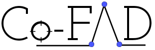

Media Coverage
IIITD <=> Logically Communication Cell 2022
Project Robinhood aims to capture the pre and post analytics for the Indian Assembly Elections 2022.
IIITD <=> Logically Communication Cell 2021
LCS2 has signed an MOU with Logically.ai to start a funded collaborative research for the next two years in the area of fraud and misinformation.

The Workshop on Combating Fraud Activities using Data Science (Co-FAD) was a one-day colloquium studying the impact of fraudulent activities in Social Science, Journalism, Product Reviews, Forged Imagery, Cybercrime, and Finance. It hosted some of the most influential people whose research has helped curb fake activities around the web.